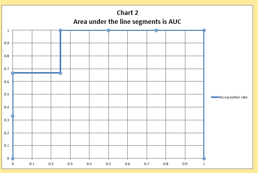
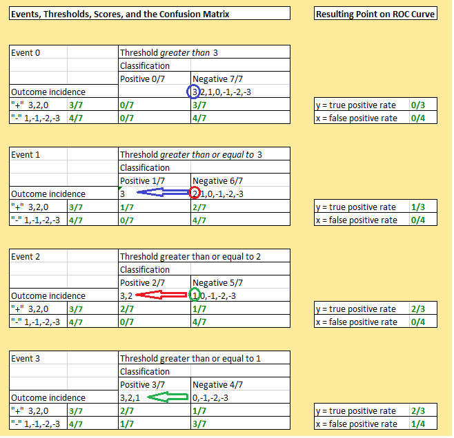
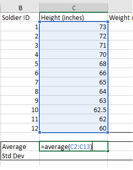
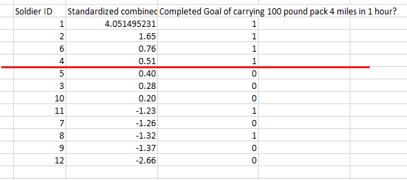

Objectives
Binary classification - Area under the Curve
Notes developed using material produced by Daniel Egger from Duke University. Copyright Daniel Egger/ Attribution 4.0 International (CC BY 4.0)
Area Under the Curve
The area under the Receiver Operating Characteristic or ROC curve, also called the AUC, is the most widely used performance metric for binary classification models.
Its two great strengths are, first, that AUC results do not change in the incidents of the actual condition, nor is AUC affected by changes in the relative cost of the two different types of binary classification errors, false positives and false negatives. Therefore when either future incidents or the cost of classification errors or both are unstable or cannot be known, the AUC is generally the best possible performance metric available.
The AUC metric ranges from a minimum of one-half (.5) to a maximum of one. An AUC of one-half indicates total uncertainty about classification. An AUC of one would be classification with zero errors, a theoretical ideal that no one expects you to meet. A normal good to very good area under the curve is typically in the .65 to .85 range.
A common technique in data analysis is to develop a binary classification model by varying certain parameters so as to maximise the AUC on a sample data set of data with known outcomes, often called a training set.
Download the following data set:
The ROC helps to measure the effectiveness of our model at each threshold. To make a ROC curve you start with a collection of events. In this spreadsheet, there are seven events numbered one through seven. In column B, rows 20 through 26. Each event is assigned a score (C20-C26). Each event also has a binary outcome shown in column D20-D26).
To generate an ROC curve, we need to know what the true outcomes are and then we need to know how effective our model is at each possible threshold for positive classification.
The way we do this is we rank all of the events by the score (this is already done for you in the spreadsheet).
Now you must perform the classification at each threshold.
At the first threshold which is a score above 3 there are no occurrences, and everything would be classified as negative.
At the next threshold which has a score of 3 or above, figure out how many false positives there would be and fill in cell E20.
Next figure out how many true positives there would be and fill in cell F20.
Work you way through each threshold calculating and filling in the appropriate cells for the false positives and true positives
Next you need to calculate the false positive rate and the true positive rate.
Remember from the previous lab this is calculated as:
- The number of false positives at a threshold divided by the total number of negative outcomes.
- The number of true positives at a threshold divided by the total number of positive outcomes.
Area under the curve
Now that you have calculated the false positive and true positive rates we have our x and y axis points for plotting.
Remember they are:
x= FP rate
y = TP rateThe figures you should have for these rates are as follows:

For the threshold where the score is greater than or equal to 1 there are three outcomes, two positive outcomes and a negative outcome. The negative outcome is incorrectly classified as positive, therefore there is one false positive, and the two actual positive outcomes are correctly classified, therefore there are two true positives.
The false positive rate is 1 divided by 4 = .25 The true positive rate is 2 divided by 3 = .67
This ordered pair .25, .67 is represented on our ROC curve. If we start at 0,0 and we plot the ordered pairs 0,.3 then 0, .67, then .25, .67 and so on until we get to 1,1 we have marked the points for four rectangles on chart 1. Notice that either the x or y axis change between two points, never both.
As you enter these values you will see the two charts will be represented below. This type of chart is a scatter chart. The data set used to construct the chart is G18:H26

Next we sum the area of these rectangles to get an idea of the overall strength of our classification model. So we take the width of each times its height so the first rectangle has a width of .25 and a height of .67. The second rectangle has a width of .75 (1-.25) and height of 1. These areas are equal to 0.917.
Each threshold has it's own confusion matrix in the spreadsheet. When you take a look at each confusion matrix we can see at event 0 everything is classified as negative. Once we go to event 1 where the threshold is greater than or equal to 3 then we have essentially moved the score of 3 (circled in blue) to be a positive classification (blue arrow). This is the case each time we move up a threshold, the score 2 (circled in red) moves to be a positive classification for threshold greater than or equal to 2. For each change in threshold one of the positive classification items will change. When we moved the score of 3 to be positive then the positive outcome increases to 1, when we move the score of 2 it increases to 2 and when we move the score of 1 then the false positive increases to 1 (all circled in black).

Binary Classification with more than one input variable
In our first binary classification problem, we had just one input it was for a cancer diagnostic. And we had a level of protein, and we ranked everything by that level, and then we identified different thresholds above, which everyone would be declared to be a positive test, and below the threshold everyone would be declared to be a negative test.
What we have in business problems is a whole bunch of inputs, and we want to combine them so as to create the best possible model to predict our binary outcome, how to combine them.
A simple example of combining of binary classification variables.
There are 12 soldiers, their mission is to carry a 100 pound pack four miles in one hour. The data we have about each soldier is their height, weight and age. So there will be a series of outcomes; a 1 for positive and a 0 for negative.
Rows 1-13 show the data in imperial and metric. They are sorted by Height from tallest to shortest.
6 soldiers completed the goal and 6 did not.
At a threshold of height 70 we can say there:
- is a false positive rate of 1/6 (1 false positive divided by the total number of negative outcomes),
- and the true positive rate of 3/6 or 1/2 (3 true positives divided by the total number of positive outcomes).
Now sort the spreadsheet by weight.
- If we look at the threshold of 165 lbs we can see a false positive rate of 1/6 and a true positive rate of 3/6 or 1/2.
Now we would like to combine these variables, to do this it is a good idea to standardise them.
- To do this we use the standarize() function in Excel. This function creates the z-score or normalised values for the data set.
- First we must calculate the mean and the standard deviation for the data set.

For the heights and weights of all 12 soldiers calculate the average and standard deviation (stdev.p) place them in cells C15 & C16 and in D15 and D16.
Next in cell C19 enter the following :
=standardize(C2,C$15,C$16)Copy the formula down to C30.
Do this now for the weight values placing the formula in cells D19-D30. Next we add the standardized values together in column G. In cell G19 write the formula:
=(C19+D19)Take a copy of the contents of B19-B30 and paste just the values lower down the spreadsheet somewhere around B33. Also take a copy of the completed goal and the combined standardized height and weight, paste the values only next to the soldier numbers.
Moving the contents like this avoids any sorting errors. Now we can sort using the combined standardized height and weight.

You should see if we pick a threshold of greater or equal to .51 standardized height and weight we achieve a true positive rate of 4/6 or 2/3 which is better than using height or weight on their own.
If we had simply added together the raw heights in inches and weights in pounds we would of got completely different outcomes as weight would of swamped the figures. By standardizing the data we find a way to treat each of the two input variables as equally important. For instance, a height that is two standard deviations larger than the mean height would have the same impact as a weight that was two standard deviations heavier than the mean.
Exercises
The Cancer Diagnosis spreadsheet works the same way as the bombers and seagulls scenario. It is designed to provide a realistic simulation of the cost-benefit assumptions that must be made to set the classification threshold for a medical diagnostic product. Download the spreadsheet and investigate the contents, below are details of what is contained in the file:
- The file has 10,0000 rows of data.
- The ranked scores in column A are the level of a certain protein as measured by the diagnostic test.
- The true condition for each protein level is given in column C [Cancer=1, No Cancer=0].
- A threshold for a positive classification can be set between any two protein levels.
- For each threshold in column A, the resulting number of false negative classification errors is given in column H, and the false positive classification errors in column F.
There are 100 correct cancer diagnosis out of the 10,000, resulting in 9900 correct no cancer diagnosis. If you look at row 19, protein value 18636.922. If the threshold is set to greater than this amount there would be 1 true positive diagnosis and 9 false positive diagnosis. This can also be read as saying at that threshold there would be for the sample, 9 false positives and 99 false negatives (only one true positive at that threshold out of the 100 total).
This spreadsheet is designed to allow you to observe how changing costs inputs impacts both:
- the overall costs of using a cancer diagnostic test at each threshold, and
- what threshold should be chosen as optimal thus minimizing costs.
Cell G3 contains the cost per False Negative (missing a cancer case) and cell H3 for the cost per False positive (a false alarm). Total costs as each threshold are given in column K.
The minimum total cost, and minimum cost per event (per diagnosed classification reported), are displayed in cells K4 , and L4, and the optimum threshold - the lowest protein level score that should be classified positive is displayed in cell M4.
At the default costs of €50,000 per false negative error and €500 per false positive error, the minimum cost per event is €119.90, and the optimal threshold for positive classification is 16551.930.
To Do
Try changing the inputs yourself. If you keep the cost per False Negative (FN) the same, but raise the cost per False Positive, would you in general expect the new optimum threshold to be higher (fewer total positive classifications) or lower (more total positive classifications)?
- Change the cost per False Positive (FP) to $1500 and you will see that the optimum threshold is higher. It moves from 16551.930 to 16824.137.
- Reset the cost per FP to $500 and raise the cost per FN to $500,000, the optimum threshold drops to 13307.537